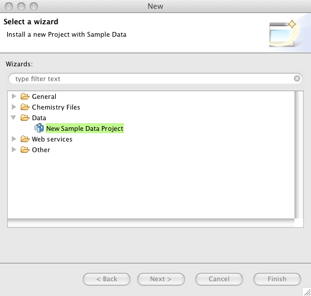
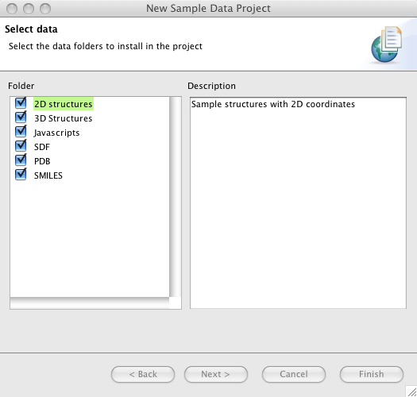
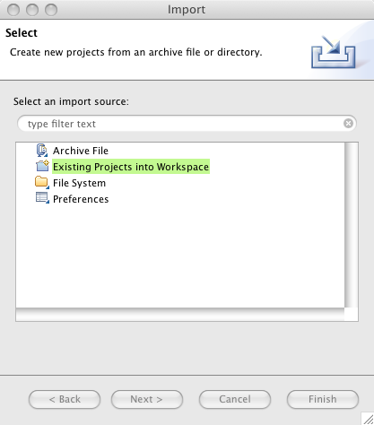

Importing data into Bioclipse
The Bioclipse Navigator
works with Resources (Projects, Files, and Folders) which reside in a
Workspace.
You always need a Project in the navigator. Just right-click in the Navigator and select
New > Project... and then General Project for an empty project to start with.
You now have several ways to make your files and folders available in the Project:
- Copy and paste files/folders from another window (e.g. Explorer)
- Drop files/folders in the navigator
- In the Bioclipse manu, select "Import..." and then any of the available options
- Create a new Project that installs data (e.g. Sample Data Project or Drugbank Project)
- Use a plugin to download files from the Internet (e.g. the Web services plugin)
In the menu, select File > New > Project... or right click on the
Bioclipse Navigator and choose New > Project....
Select New Sample Data Project, click Next, Next and then select what resources to import into the Project.


Import a Bioclipse Project
In the menu, select File > Import... or right click on the
Bioclipse Navigator and choose Import ....
In the wizard, choose General > Existing Project into Workspace.
This imports an existing Bioclipse project in your workspace.
The project can either be already in your
workspace as a directory, but not yet visible,
or exist somewhere outside your workspace.
This is useful if you maintain multiple Bioclipse
workspaces in parallel (which is possible) or
you want to exchange complete projects with others, e. g. co-workers.
